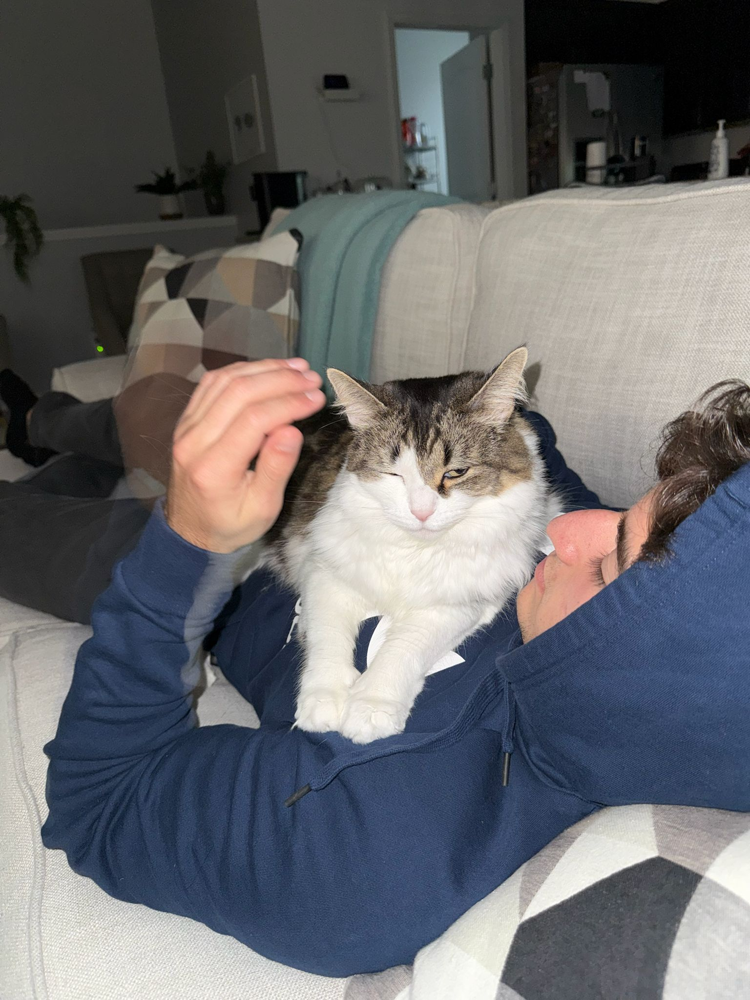

Loading...

Me and Dog
Me and Cat
Hey my name is Lucas, I'm from Brazil, and I'm here at OCC pursuing a degree in Software Engineering. After I receive my degree, I'll transfer to a university to then continue with the bachelor's.
| Course | Description |
| CIS 2454 | This course focuses on design and implementation techniques for Web-based application software. Server-side software design and development techniques associated with Web Developer job skills will be emphasized. Topics to be covered will include: Web application architecture; design patterns and application frameworks; PHP language basics; Asynchronous JavaScript and XML (AJAX)-based request processing; and Web application security. |
| CIS 2818 | This course focuses on the design and implementation of wireless handheld application software on the Android platform for business and personal use. Students will use the Android Studio integrated development environment (IDE) to develop and test application software. Development techniques will focus on operational aspects of mobile devices that distinguish them from PCs and general computing platforms. |
| CIS 2878 | This course delves into the principles and practices of DevOps, emphasizing its crucial role in modern software development and deployment lifecycles. Through a comprehensive exploration of tools, methodologies, and collaborative frameworks, students gain proficiency in integrating development and operations teams effectively. Key topics include declarative deployment, version control, implementation of CI/CD pipelines, and Infrastructure as Code (IaC) principles. Students engage in practical exercises to reinforce their understanding of DevOps concepts and their application in real-world scenarios. |
One site I like and spend a lot of time on for studying/entertainment: Youtube
I find fun and enjoy doing anything, however, I do have favorites activities.
Activities
Sports
Interests